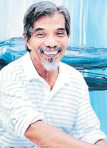

Early life of ABDUL LATIFF MOHIDIN
Latiff was born in Lenggeng, Negeri Sembilan, Malaysia and received his formal primary education at Kota Raja Malay School in Singapore. His talent in painting later granted him the Deutscher Akademischer Austrauschdienst (DAAD) scholarship to study at the Academy of Arts in Berlin from 1960 until 1964. Later in 1969, the French Ministry of Culture awarded him with a scholarship to study etching in Paris at the Atelier Lacourière-Frélaut, followed by a grant from the Asian Cultural Program of The JDR 3rd Fund (later known as the Asian Cultural Council) for a residency at the Pratt Institute in New York. Due to his education, he speaks Malay, English and German.